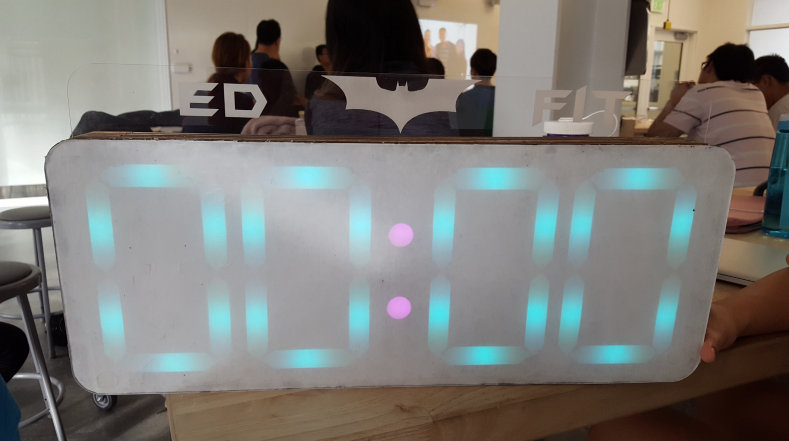

EdFit:
An interactive Hyper-Personal Device
[Arduino] [Soldering] [Laser Cutter] [Human Computer Interaction]
Watch the video! 
{kind=link}
{kind=link}
{kind=link}
{kind=link}
{kind=link}
{kind=link}
{kind=link}
Involved in most of the user resreach, design and fabricatin process. Pair-programmed the countdown logic for the Arduino along with the lighting logic.
As a small group, we were tasked with creating a hyper-personal object for a ‘familiar stranger'. A familiar stranger is a person who you see during your regular activities, but someone who you have never interacted with. It was important for us to realize that we were not designing for a group, demographic, or community. Rather we were designing for a single individual. We selected Ed—a charismatic late 20’s male with a wife and child and newly entering a graduate school program at UC Berkeley. This project revolved around the very core of Human Centered Design. We started with Ed and ended with a product that reflected his life.
In the first part of the interview process we focused exclusively and intently on investigating, documenting and analyzing Ed. Our goal was to deeply understand Ed’s particular habits, schedules, interests, likes, dislikes, activities, goals, and passions. We used James Spradley’s three important principles to facilitate our interviews: "(1) documenting the language used for field note entry (2) making a verbatim record of what people say and (3) concrete language, a description of every detail in specifics.” We found that Ed’s life was micromanaged and completely scheduled around school and his home life. Fitness was his way of destressing. His peers began asking for personalized workout sessions. What began as a one-on-one workout affair grew into something more: an intense weekly program for other graduate school students, which they called ‘Ed-fit'. Although we asked about his son and wife quite often, he was much more engaged in talking about his fitness routines with peers. We reviewed the initial interview with our group and chose a couple focus areas to return to during our next interview with Ed. Our goal was to glean very specific information so that we could make a prototype for Ed as personal and customizable as possible. We circled most of our questions around fitness and his son, Curry. Once again, he was more reserved and tentative in talking about his son and home life. It became clear that he was more interested in developing ideas around exercise and his new-found fitness class. We also decided to attend of his classes as actual participants. We noted that he enjoyed seeing others improve and being motivated to push themselves harder with every workout. We approached him with the idea of creating a batman ‘signaling’ device that would alert Ed whenever someone pinged him over Slack, a popular online messaging platform that his peers used. However, we realized his biggest concern was the lack of motivation in many of his attendees. They quit too soon. In the end, our group decided on making a personalized (batman) countdown clock reminiscent of the large timers seen in most recreational gyms. Ed noted that the motivated attendees enjoyed competing against one another. However, there were others who wanted to improve for the sake of themselves. These individuals had no way of benchmarking their success. A clock would give them the mental awareness required to gauge their progress. It would also allow Ed to focus on the workout rather than individually motivating each person. The timer began with a soothing turquoise blue color before the three minute mark, at which it turns red to signal to the participants that the end of the exercise is close. In the last minute, the digits flash random colors to bring excitement and hopefully encourage people to give one final push.
Our first iteration included the wooden template with the neopixels, an acrylic top with rastered digits, and an acrylic backing with a rectangular cut-out for the arduino. The breadboard held the wires above with wooden cylinders. We quickly learned that this structure was too flimsy, as we had snapped a piece of the acrylic backing. In addition, the electronics should be properly housed, as we had burned out an Arduino. We soon noticed that the LEDs were not evenly diffusing light across the rastered strips which made up the numbered components. After hours of experimenting, we found a solution. We tried different types of material such as plastic, styrofoam, and paper. We played with varying elevated surfaces. In the end, we sanded the acrylic for a frosted effect, colored the wood black to create higher contrast, and used an extra piece of paper for an even diffusion. We then elevated the top acrylic layer with two more layers of wood to spread the cone of light from the LED over a greater distance. To protect the wiring in the back, we laser cut connectable strips of wood to surround the electronics, and stacked these until there was enough space to house the arduino and a breadboard with buttons. A larger acrylic backing was laser cut to enclose the electronics.
Group Members: Francisco; Patrica; Krystal;
home